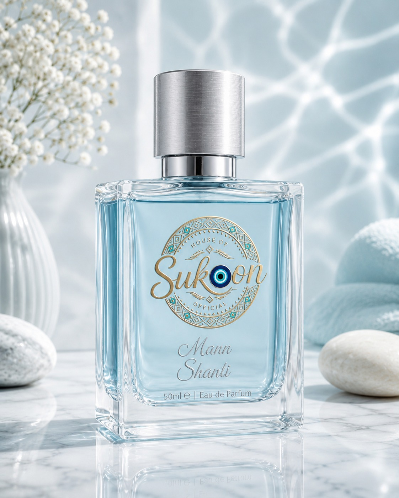

SUKOON
House of Sukoon is built around a simple belief: fragrance is not merely perfume. It is emotion, intention, memory and identity.

THE SUKOON PHILOSOPHY
Every fragrance is built to carry a single, clear intention — so that wearing it is a quiet, deliberate choice, not an afterthought.
A signature scent becomes part of how you're remembered. We build fragrances meant to feel like an extension of who you already are.
Applying fragrance with intention — pausing, breathing, choosing — turns a daily habit into a small, grounding ritual.
Find your energy ↗SIX BELIEFS
Every fragrance is built around a clear emotional intention, so the act of wearing it can be purposeful.
A signature scent becomes part of how you are remembered. We create fragrances designed to feel personal.
Pausing, breathing and choosing a scent transforms a daily habit into a small grounding ritual.
Each formula is hand-blended in small batches and refined over multiple trials, never rushed to meet a quota.
Our Sukoon Signature Base of sandalwood, amber and white musk is chosen for how it evolves on skin, not just in the bottle.
Luxury cannot be rushed. Every fragrance rests before it is bottled, and every batch stays small enough for us to stand behind.
THE SIGNATURE BASE
We believe luxury is not loud. It is the feeling that remains after the room has gone quiet — a close-to-skin trail, thoughtful ingredients and a scent that feels like yours.